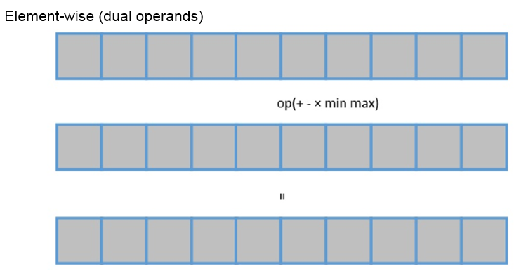
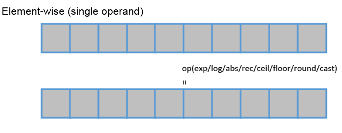
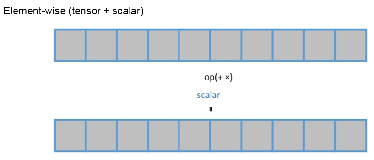
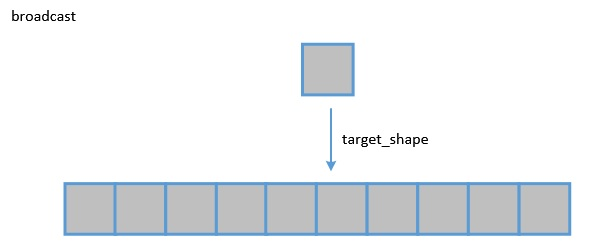

Description
To improve the usability of custom operators and the development efficiency, some vector operators are encapsulated in a modular manner. For element-wise operation APIs, you need to use TVM primitives to define the input tensor, invoke the encapsulated APIs, briefly describe the computation process of the custom operator, and then invoke the provided "auto schedule" and build APIs to compile the custom operator into a binary executable file.
Tensor Engine provides a group of encapsulated APIs, currently covering the following vector operations:
Element-wise APIs
The input data is calculated using different operations by element, and the output usually has the same shape as the input.
Dual-operand operations. Two tensors are input and calculated by element to obtain the result.
- Add the corresponding elements of two sensors. For details, see te.lang.cce.vadd（lhs, rhs）.
- Subtract an element of one tensor from an element of the other tensor. For details, see te.lang.cce.vsub（lhs, rhs）.
- Multiply an element of one tensor and an element of the other tensor. For details, see te.lang.cce.vmul（lhs, rhs）.
- Compare the corresponding elements of two sensors and choose the smaller value. For details, see te.lang.cce.vmin（lhs, rhs）.
- Compare the corresponding elements of two sensors and choose the larger value. For details, see te.lang.cce.vmax（lhs, rhs）.
- Perform the bitwise OR operation on the corresponding elements of two sensors. For details, see te.lang.cce.vor（lhs, rhs）.
- Perform the bitwise AND operation on the corresponding elements of two tensors. For details, see te.lang.cce.vand（lhs, rhs）.

Single-operand operations. One tensor is input and calculated by element.
- Natural exponential. For details, see te.lang.cce.vexp（raw_tensor）.
- Logarithm. For details, see te.lang.cce.vlog（raw_tensor）.
- Absolute value. For details, see te.lang.cce.vabs（raw_tensor）.
- Reciprocal. For details, see te.lang.cce.vrec（raw_tensor）.
- Round up. For details, see te.lang.cce.ceil（raw_tensor）.
- Round down. For details, see te.lang.cce.floor（raw_tensor）.
- Banker's rounding. For details, see te.lang.cce.round（raw_tensor）.
- Data type conversion. For details, see te.lang.cce.cast_to（data, dtype, f1628IntegerFlag=False）.
- ReLU calculation. For details, see te.lang.cce.vrelu（raw_tensor）.
- Bitwise NOT. For details, see te.lang.cce.vnot（raw_tensor）.

Tensor and scalar value operations. Each element of the input tensor is calculated with the same value.
- Add a scalar to a tensor. For details, see te.lang.cce.vadds（raw_tensor, scalar）.
- Multiply a tensor by a scalar. For details, see te.lang.cce.vmuls（raw_tensor, scalar）.

Three-operand operations. Three tensors are input. The tensors are calculated with scalars by following the preceding calculation rules to obtain the results.
- Add a scaled tensor to the second tensor. For details, see te.lang.cce.vaxpy（lhs, rhs, scalar）.
- Calculate three input tensors by following the rule of x * y + z. For details, see te.lang.cce.vmla（x, y, z）.
- Calculate three input tensors by following the rule of x * z + y. For details, see te.lang.cce.vmadd（x, y, z）.
- Calculate three input tensors by following the rule of relu（x * z + y）. For details, see te.lang.cce.vmaddrelu（x, y, z）.
Reduction APIs
Compress the data of a dimension and perform operations such as accumulation and multiplication on the data in the specified direction. The operation output is one dimension less than the input data.
- Accumulate the values along an axis. For details, see te.lang.cce.sum（raw_tensor, axis）.
- Calculate the minimum value along an axis. For details, see te.lang.cce.reduce_min（raw_tensor, axis）.
- Calculate the maximum value along an axis. For details, see te.lang.cce.reduce_max（raw_tensor, axis）.

NOTICE:
Usage limitation: Due to the data arrangement limitation on the CCE computing platform, the data after the reduction operation needs to be rearranged for subsequent operations. Therefore, when different types of APIs are used, no vector operation can be performed after the reduction operation.
Broadcast Operation APIs
The broadcast operation is mainly used to process two tensors with different shapes and broadcast an operand with a lower dimension according to a higher-dimension operand. The element-wise calculation is performed after the dimensions of the two operands are the same.
Broadcast a smaller tensor to a larger tensor. For details, see te.lang.cce.broadcast（var, shape, output_dtype=None）.

Index Operation APIs
Index operations are used to perform calculations on tensors by segment, such as obtaining the sum value, average value, inner product, maximum value, and minimum value.
- Sum up tensors by segment. For details, see te.lang.cce.unsorted_segment_sum（tensor, segment_ids, num_segments, init_value=0）.
- Calculate the average value of tensors by segment. For details, see te.lang.cce.unsorted_segment_mean（tensor, segment_ids, num_segments, init_value=0）.
- Calculate the inner product of tensors by segment. For details, see te.lang.cce.unsorted_segment_prod（tensor, segment_ids, num_segments, init_value=0）.
- Calculate the minimum value of tensors by segment. For details, see te.lang.cce.unsorted_segment_min（tensor, segment_ids, num_segments, init_value=0）.
- Calculate the maximum value of tensors by segment. For details, see te.lang.cce.unsorted_segment_max（tensor, segment_ids, num_segments, init_value=0）.

Concat Operation APIs
Concat operations are used to concatenate multiple input tensors along an axis.
Concatenate the tensors along an axis. For details, see te.lang.cce.concat（raw_tensors, axis）.
Convolution APIs
Convolution APIs are used to implement convolutional operators.
Implement convolution. For details, see te.lang.cce.conv（*args）.
4D/5D Conversion APIs
These APIs are used for conversion between 4D NCHW and 5D NC1HWC0.
- Convert from 4D to 5D. For details, see te.lang.cce.compute_four2five（input, raw_shape_4D）.
- Convert from 5D to 4D. For details, see te.lang.cce.compute_five2four（input, raw_shape_4D）.